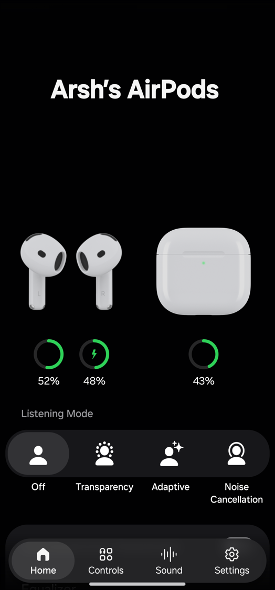
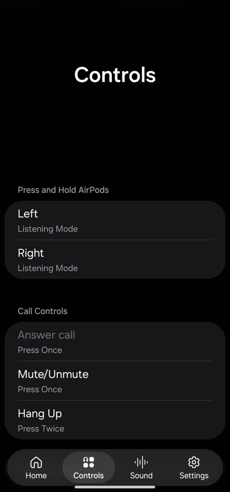
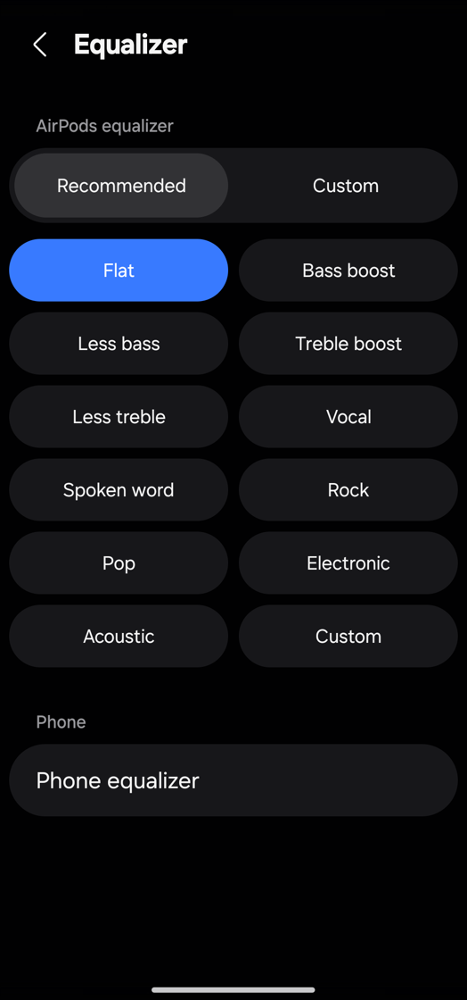
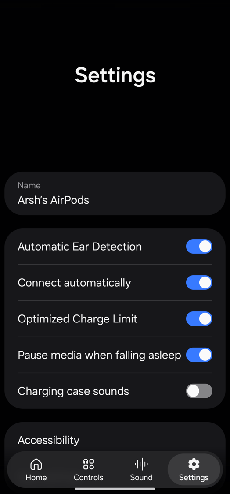

Pods
Your AirPods on Android, with an interface that follows Samsung One UI.




Features
Battery at a glance
Levels for both earbuds and the case, with alerts at 10%, 5%, 2% and 1%.
Listening modes
Noise cancellation, transparency and adaptive audio, also from a Quick Settings tile.
Equalizer
Presets for the AirPods' own equalizer, and a custom bass, mid and treble setting you can save.
Controls
Press and hold actions, call controls, ear detection, microphone choice and head gestures.
Private by design
No account, adverts or analytics, and no internet permission. Read the policy.
Made for your model
Pictures match your AirPods, and controls they do not support stay hidden.
Requirements
Without root, Pods needs one of these:
- Android 17 or newer
- Android 16 on OnePlus, OPPO or realme phones
- A Pixel on an Android 16 CP1A build
Other phones need root with an Xposed framework. What you can control depends on your AirPods model, firmware and Android version.